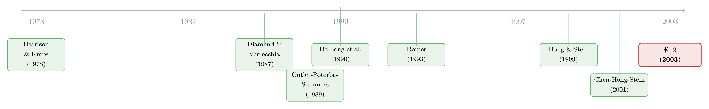

市场为什么只会「崩」，不会「暴涨」？——一个关于沉默者的故事
本文读的是 Hong & Stein (2003, Review of Financial Studies)：当投资者意见不一、且悲观者被卖空约束挡在场外时，他们的负面信息会被「藏」起来；只有当原本乐观的人开始离场、悲观者被迫成为边际买家时，这些积压的坏消息才会一次性涌出。于是市场只会在下跌时「放出更多信息」——这就是为什么大跌远比大涨常见，以及为什么高成交量会预示更强的负偏度。
1 引言：一个需要先定义清楚的词
我们都在用「崩盘」这个词，但很少有人停下来追问：到底什么才算一次崩盘？
Hong 和 Stein 在文章开头做的第一件事，恰恰就是把这个词拆开。在他们看来，一次真正的崩盘 (crash) 包含三个缺一不可的元素：第一，它是一次异常巨大的价格变动，却没有相应巨大的公开新闻；第二，这个巨大的变动是负的——市场会「熔化向下」(melt down)，却几乎从不「熔化向上」(melt up)；第三，它是一种「传染性」的、全市场范围的现象，不是单只股票的暴跌，而是一整类股票高度相关地一起下坠。
这三条不是凭空设的标准，每一条背后都站着一组稳健的经验事实。关于「无新闻的大波动」，Cutler、Poterba 和 Summers (1989) 早就记录过：战后 S&P 500 指数许多最大的单日波动——最著名的就是 1987 年 10 月那次——根本找不到对得上的重大新闻事件。关于「只跌不涨」的不对称，他们给出一个让人过目难忘的数字：自 1947 年以来 S&P 500 十次最大的单日波动里，有九次是下跌。而关于「传染」，期权市场也留下了痕迹——指数期权的隐含波动率有一条陡峭的「冷笑」(smirk)，单只股票期权却没有那么陡，市场显然在为「下跌时相关性会上升」这件事定价。
于是一个自然的问题浮出水面：什么样的机制，能同时解释这三件看似不相干的事？
这正是这篇论文野心所在。它不满足于解释其中一条，而是想用一个核心机制把三条一起兜住。而这个机制，说穿了，是关于沉默的——关于那些被挡在市场门外、暂时说不出话的人，他们的信息去了哪里，又会在什么时候、以什么方式回来。
2 核心直觉：被「藏」起来的坏消息
让我们先把数学放一放，用最朴素的语言把故事讲一遍。
设想市场上有两个投资者，A 和 B，每人都收到一个关于股票最终价值的私人信号。客观上，两人的信号同样有用。但这里有一个行为偏差：A 只相信自己的信号，哪怕 B 的信息已经写在了价格里，他也视而不见；B 也一样。这就是所谓的 异质信念 (differences of opinion)，你也可以把它读成一种 过度自信 (overconfidence)——每个人都（错误地）以为自己的信号比对方的更精确。
除了 A 和 B，市场上还有一群完全理性、风险中性的 套利者 (arbitrageurs)。他们知道股票的真值应该是 A、B 两个信号的平均，但麻烦在于——他们未必每次都能看到这两个信号。为什么？ 因为 A 和 B 都受卖空约束 (short-sales constraint)，只能做多，不能做空。所有结论都死死地系在这一条假设上。
现在把时间拨慢，一帧一帧地看：
首先，在时间 1，假设 B 收到一个悲观信号，他对股票的估值远低于 A。因为不能做空，B 干脆离场——他不喊价、不下单，只是沉默地坐着。市场上只剩 A 和套利者在交易。套利者足够聪明，能推断出「B 的信号低于 A」，但他们无法知道究竟低多少。于是时间 1 的价格，吸收了 A 的信息，却没有完整反映 B 的悲观。B 的坏消息，被藏了起来。
接着，一个自然的问题是：这些被藏起来的信息，什么时候会出来？
然后，看时间 2。如果 A 收到一个好信号，他依旧是更乐观的那个，他的新信号被写进价格，而 B 的旧信号继续藏着——什么新东西都没多透露。
但真正关键的一步在于：如果 A 在时间 2 收到一个坏信号呢？这时 A 开始离场。套利者会盯着一件事——B 会不会进场接盘，以及在什么价位接。如果价格只跌了 5% B 就开始买，套利者就学到「B 当初的信号其实没那么糟」；可如果价格跌了 20% B 仍然按兵不动，套利者就只能得出结论：B 的信号比他们原先以为的还要负。换句话说，B 不肯提供「买盘支撑」这件事本身，就是一条额外的坏消息，它叠加在 A 想卖出这条直接坏消息之上。
于是反转出现了：当 A 收到好信号，只有 A 的信号被揭示；可当 A 收到坏信号，不仅 A 的信号被揭示，B 积压已久的隐藏信息也可能一起涌出。市场下跌时放出的信息总量，系统性地多于上涨时。这正是「最大的价格变动往往是下跌」的另一种说法。
这就是全文的那一个核心。后面所有的数学、所有的推论、所有的实证含义，都是从这一句话里长出来的：坏消息会在市场下跌的过程中被内生地、成块地释放出来。
3 模型：把「沉默」写成一个 max 函数
现在我们把这套直觉翻译成模型。这一节会有公式，但每一步的意思我都会讲清楚——对理解这篇论文，必要的推导是绕不过去的。
3.1 设定
模型有四个日期：时间 0、1、2、3。一只「股票」（也可解读为整个市场组合）将在时间 3 支付终端股利 \(D\)。终端股利由两个信号的平均加一个噪声决定：
$$D = (S_A + S_B)/2 + \varepsilon$$
其中 \(\varepsilon\) 是均值为零、方差归一化为一的正态冲击。注意这是客观现实：A、B 两个信号同等重要。但 A 和 B 都只信自己那一个。
信号到达有先后：时间 1，B 观察到 \(S_B\)；时间 2，A 观察到 \(S_A\)。两个信号的先验分布是：
$$S_B \sim U[0,\,2V], \qquad S_A \sim U[H,\,2V+H]$$
所以 \(E_0[S_B]=V\)，\(E_0[S_A]=V+H\)，且 \(0 \le H \le 2V\)。这里 \(V\) 可以读作「消息本身的方差」，\(H\) 则是「意见的事前异质度」(heterogeneity)。\(H>0\) 意味着先动的 B 平均而言比 A 更悲观——这只是为了把核心直觉凸显出来，论文在 2.4.1 节说明了放松它结论依然成立。
时间 0 的价格，就是套利者在任何信号到达前的期望：
$$P_0 = V + H/2$$
3.2 卖空约束就藏在一个 max 里
现在是整个模型的心脏。假定 A 有风险厌恶系数为 1 的 CARA 效用，在试探价格 \(p_2\) 下，他的需求是：
$$Q_A(p_2) = \max\{S_A - p_2,\; 0\}$$
B 在时间 \(t\)（\(t=1,2\)）的需求同理：
这个不起眼的 \(\max\{\cdot,\,0\}\) 就是全文张力的来源。如果没有那个 0、如果 B 可以做空，那么无论他多悲观，他都会喊出一个（负的）需求，把自己的信号泄露给套利者。正是因为不能做空，悲观者只能选择沉默；而沉默，恰恰是信息无法被揭示的原因。
3.3 理性基准：为什么「分歧」不可或缺
在求解之前，论文先插入一个对照组——假如所有人都完全理性会怎样？
命题 1（理性基准）：当 A、B 完全理性时，卖空约束不起作用，价格在信息一到达就充分反映： $$P_1 = (V + H + S_B)/2, \qquad P_2 = (S_A + S_B)/2$$ 收益在时间 1 和时间 2 都对称分布，且同方差 (homoscedastic)。
证明的逻辑很漂亮：假设时间 1 时 B 的信息还没出来，那意味着 B 对终端股利的估计低于任何被喊出的试探价格。但市场出清价必须等于风险中性套利者的估计，而套利者知道 B 是理性的、且此刻比自己更知情。所以只要 \(S_B\) 没被揭示，套利者就知道试探价太高，市场无法出清——价格只能继续往下走，直到逼出 B 的信号为止。
命题 1 的意义在于：它告诉我们，结论不是单靠卖空约束撑起来的。 卖空约束必须和异质信念相互作用，才能生出后面那些不对称与异方差。这也是这篇文章和 Diamond & Verrecchia (1987) 的关键分野——在后者那里，即便人人理性，卖空约束也照样有影响。（关于卖空约束如何在现实数据里撑开定价裂缝，可参见《同一份现金流，两个价格：当「借不到的券」撑开了期权与股票的裂缝》。）
3.4 隐藏信息与那条临界线
回到有分歧的世界。现在 \(S_B\) 可能根本不被揭示——只要 B 足够悲观。论文区分两种情形：
- 情形 1：B 的信息被揭示，则 \(P_1 = (V+H+S_B)/2\)；
- 情形 2：B 的信息保持隐藏，则 $$P_1 = (V+H)/2 + E_1[S_B \mid NR]/2$$ 这里 \(E_1[S_B\mid NR]\) 是「在 \(S_B\) 未被揭示的条件下」对 \(S_B\) 的时间 1 期望。
什么时候会落入情形 2？给定拍卖机制，\(S_B\) 保持隐藏的必要条件是 \(S_B \le P_1\)——B 的估值不超过出清价，否则他早就喊价、把信号泄露了。这暗示存在一条临界线 \(S_B^*\)：高于它，\(S_B\) 必被揭示。
求这条线，是一段干净利落的推导，我们一步步走：
第一步，若对所有 \(S_B > S_B^*\) 都会揭示，那么「未揭示」就等价于 \(S_B\) 落在 \([0, S_B^*]\) 上，其条件期望就是这段区间的中点： $$E_1[S_B \mid NR] = S_B^*/2$$
第二步，把它代回情形 2 的价格： $$P_1 = (V+H)/2 + S_B^*/4$$
第三步，临界点的定义是「恰好 \(S_B = S_B^* = P_1\)」，于是令 \(S_B^* = (V+H)/2 + S_B^*/4\)，解这个一元方程： $$S_B^* - S_B^*/4 = (V+H)/2 \;\Longrightarrow\; \tfrac{3}{4}S_B^* = (V+H)/2$$
于是得到论文的引理 1：
$$S_B^* = 2(V+H)/3$$
只要 \(S_B > S_B^*\)，B 的信号一定会被揭示；只要 \(S_B \le S_B^*\)，它就被藏起来，等待时间 2 那个可能的「释放时刻」。这条临界线，就是「沉默」与「发声」的分水岭。
4 三个事实，一个机制
有了模型，回头看引言里那三个待解释的事实，它们如何被同一个机制串起来？
关于「无新闻的大波动」：时间 2 的价格变动可能与当期新闻（即给 A 的信号）完全不成比例，因为它还反映了 B 此前被藏起来的信号。在这一点上，论文承认自己与 Romer (1993) 神似——Romer 极有洞见地指出，交易过程本身能内生地揭示积压的私人信息，从而让一个小小的可观测新闻引发巨大的价格变动。
关于「只跌不涨」的不对称：这是本文与 Romer 分道扬镳之处。Romer 的模型本质上是对称的，而这里有一个根本的不对称——A 收到好消息时只揭示一个信号，收到坏消息时却可能连带揭示两个。下跌时出来的信息总量更大，所以最大的价格变动总是下跌。
关于「传染」：把模型扩展到多只股票。一只股票 \(i\) 的抛售，会释放出不仅与 \(i\) 相关、还与另一只股票 \(j\) 相关的积压信息。于是坏消息会抬高股票之间的相关性，而 \(j\) 的价格可能在它自身基本面毫无新闻时也剧烈波动。这正对应了「下跌中相关性陡增」的观察。（关于这种「一起崩」如何在因子模型之外被单独定价，可参见《因子动物园之外，那种没人定价的「一起崩」》。）
更妙的是，模型还给出一个可供「样本外检验」的全新预测：当设定负偏度的那种意见分歧最严重时，往往伴随着异常高的成交量。因此，高成交量应当与更强的负偏度相联系，无论在时间序列还是横截面上。这个预测后来被 Chen、Hong 和 Stein (2001) 的实证工作所验证。（顺带一提，关于横截面平均偏度对市场的预测力，可参见《市场的下一步，藏在一万只股票的「歪斜」里》。）
一个看似打脸的事实：Chen、Hong 和 Stein (2001) 同时发现，单只股票日收益的无条件平均偏度是正的，与市场组合的显著负偏度相反。作者坦诚这一点更难用模型解释，并归因于模型之外的因素——比如管理层倾向于把公司层面的坏消息「挤牙膏」式地逐步释放。这种诚实，恰恰是好论文的标志。
5 这是一个「行为」模型，但套利者杀不死它
这里有一个常被用来质疑行为模型的问题：「一旦允许理性套利，会怎样？」
在大多数行为模型里——比如 De Long 等人 (1990) 的噪声交易者框架——只要套利者足够能承担风险，就能钝化甚至消灭非理性者的影响。因为在那个设定里，非理性交易者对基本面一无所知，套利者的工作只是吸收他们制造的额外风险。
但这篇文章的结论，即便面对可以无限做多做空的风险中性套利者也依然成立。原因在于：A 和 B 虽然不完全理性，但他们手里握着套利者真正需要的、合法的私人信息。套利者的工作因此复杂得多——不只是吸收风险，还要从 A、B 的行为里反推信息。所以「套利者风险无限大」并不足以让这个模型退化成一个人人理性的世界。这一点也和 Hong & Stein (1999) 的精神一脉相承。
当然，代价是：由于套利者风险中性，模型里所有的期望收益都是零，它对收益一阶矩无话可说，只能讲收益分布的高阶矩。这是一个清醒的取舍——它不去碰收益可预测性那一大片文献，专心只讲偏度与异方差。
6 文献脉络
把这条研究线索铺开来看，会更清楚这篇论文站在哪里。
最早的源头是异质信念下的资产定价：Harrison & Kreps (1978) 论证了在意见分歧的市场里，投机性行为如何抬高价格；Varian (1989) 系统讨论了「差异化意见」。到了上世纪九十年代，Harris & Raviv (1993)、Kandel & Pearson (1995)、Odean (1998) 把异质信念用得风生水起——但他们的焦点主要是成交量，而非大的价格波动。（关于异质信念到底对定价有没有用这一争议，可参见《众人各执一词，价格却只听一个人的吗？》。）
另一条线是卖空约束：Diamond & Verrecchia (1987) 是绕不开的起点，他们证明卖空约束会减慢私人信息向价格的调整。
而在「大价格波动」这个具体问题上，最好的既有模型几乎都是理性模型——这有点讽刺。其中最关键的先驱是 Romer (1993)：交易过程能内生地、成块地揭示积压信息。Caplin & Leahy (1994) 提供了另一个隐藏信息成块释放的模型。
Hong 和 Stein 自己的 Hong & Stein (1999) 把套利者与「拥有有价值信息却过度看重它」的投资者放在一起，这一思路被本文继承。本文 (2003) 的位置，就是把异质信念 × 卖空约束这两条线拧在一起，第一次给出一个站得住脚的行为崩盘理论，并由 Chen、Hong & Stein (2001) 在实证上验证了它关于「成交量—偏度」的核心新预测。

7 评论与延伸（Q&A + 研究方向）
(a) 几个可能的疑问
Q：这和 Diamond & Verrecchia (1987) 到底差在哪？两篇都讲卖空约束。
差在「卖空约束是否需要异质信念才有牙齿」。在 D&V 那里，即便人人理性，卖空约束也已经影响价格调整。而本文命题 1 明确证明：若所有人理性，卖空约束在这个价格机制下完全不起作用——必须叠加异质信念，不对称与异方差才会出现。作者把差异归因于他们的价格机制允许同一时点更多的信息共享，从而让「理性」这条假设更有咬合力。
Q：那个「拍卖师逐步喊价」的机制，是不是太理想化了？
这确实是一个建模上的便利装置，但作者认为不算太脱离现实——它很接近巴黎证交所、多伦多交易所、纽交所的开盘集合竞价程序。尤其是巴黎 Bourse：开盘前会把试探出清价连同超额需求信息传给部分交易者，交易者可多次修订订单直到出清价确定。所以「机制不真实」这个批评的杀伤力有限。（关于集合竞价对市场质量的影响，可参见《收盘价到底准不准？》。）
Q：模型里所有期望收益都是零，这还能叫资产定价吗？
这是风险中性套利者带来的必然代价，也是作者主动选择的边界。他们坦言模型对一阶矩（收益水平、可预测性）无话可说，只讲高阶矩（偏度、异方差）。换个角度看，这反而是它的纪律性：它不去和庞大的「收益可预测性」文献抢饭碗，专注把崩盘这件事的形状讲清楚。
Q：「高成交量预示更强负偏度」这个预测，反直觉在哪里？
直觉上我们容易把「高成交量」与「市场活跃、流动性好」联系起来，似乎是好事。但在这个模型里，高成交量恰恰是意见分歧最严重的信号，而严重的分歧正是积压隐藏信息、为日后负偏度埋雷的土壤。所以高换手不是安全垫，而是预警灯——这个反直觉的方向，正是它可被证伪的价值所在。
Q：单只股票平均偏度为正，不是直接证伪了模型吗？
表面上是，尤其考虑到单只股票比市场组合更难做空，按模型逻辑负偏度本该更强。作者没有回避，而是把它归因于模型外的力量——管理层倾向于「挤牙膏」式地逐步释放公司层面坏消息，这会给个股带来正偏度。模型解释的是市场层面的负偏度，两者并不直接冲突，但这道裂缝是诚实地摆在桌面上的。
Q：为什么必须是「过度自信」？理性贝叶斯学习不行吗？
作者其实留了余地：异质信念既可解读为过度自信（每人高估自己信号的精度），也可解读为 Hong & Stein (1999) 式的「有限理性」——投资者干脆无法从价格中做推断。关键不在于偏差有多极端，而在于 A 在得知 B 的信号后不会把估值一路调到理性水平 [式 (1)]，反之亦然。只要这点偏离存在，机制就转得起来。
(b) 几个可能的研究问题与提案
1. 公司债市场里的「沉默的悲观者」
【经济故事】公司债市场的卖空比股票更难、机构持有人更受配置约束（很多基金章程禁止做空）。按本文逻辑，悲观信息在信用市场被「藏」得应该更深，崩盘时的信息释放也应更剧烈。这与公司债在危机中流动性骤然蒸发的现象高度吻合。
【可行性】中。可用 TRACE 成交数据构造换手量与已实现偏度，检验「高成交量 → 更强负偏度」是否在信用利差变动上也成立。难点在于公司债成交稀疏、价格离散，偏度估计噪声大；需借助 size-adapted 流动性度量来净化。识别上可利用评级临界、指数纳入等准外生冲击。（数据与方法上可对照《差点死掉的那个市场：一场公司债流动性危机的微观解剖》。）
2. 外资持有人是不是「更容易沉默」的那一群？
【经济故事】外资往往面临更强的信息劣势与更严的做空/借券限制。若他们更倾向于「悲观即离场」，那么外资占比高的市场，崩盘时的负偏度与传染应当更明显。这给「外资是不是市场不稳定之源」这一老争论提供了一个可检验的微观机制。
【可行性】中。可用各国「可投资度」(investability) 或 MSCI 纳入作为外资准入的外生变化，比较纳入前后个股的条件偏度与下行相关性。识别相对干净，但需控制同期的流动性与公司治理变化。（可对照《外资能买的股票，为什么更「抖」？》。）
3. 借券费率作为「隐藏信息存量」的代理变量
【经济故事】本文的核心是「被卖空约束挡住的悲观信息」。借券费率（做空成本）越高，意味着卖空约束越紧、被压制的悲观信息越多。那么高借券费的股票，是否在随后下跌时表现出更剧烈、更成块的信息释放（即更尖锐的负偏度跳跃）？
【可行性】高。Markit/D'Avolio 类借券数据已较成熟，可直接构造费率分组，检验组间条件偏度差异，并用高频数据识别「跳跃 vs 扩散」。这是对本文机制最直接的一次检验。
4. 成交量—偏度关系的横截面异质性
【经济故事】本文预测「高成交量 → 负偏度」，但分歧的来源在不同股票间差异巨大。若能用分析师预测离散度、散户参与度等代理「意见分歧」，就能检验这条关系是否在分歧最大的股票里最强——这是对机制（而非仅仅相关性）的检验。
【可行性】高。所需数据（I/B/E/S 离散度、成交量、日内已实现偏度）都现成。识别属于横截面分组对比，doable；主要风险是分歧代理变量本身的内生性。
参考文献
- Caplin, A., and J. Leahy (1994). Business as Usual, Market Crashes, and Wisdom After the Fact. American Economic Review 84, 548–565.
- Chen, J., H. Hong, and J. C. Stein (2001). Forecasting Crashes: Trading Volume, Past Returns, and Conditional Skewness in Stock Prices. Journal of Financial Economics 61, 345–381.
- Cutler, D. M., J. M. Poterba, and L. H. Summers (1989). What Moves Stock Prices? Journal of Portfolio Management 15, 4–12.
- De Long, J. B., A. Shleifer, L. H. Summers, and R. J. Waldmann (1990). Noise Trader Risk in Financial Markets. Journal of Political Economy 98, 703–738.
- Diamond, D. W., and R. E. Verrecchia (1987). Constraints on Short-Selling and Asset Price Adjustment to Private Information. Journal of Financial Economics 18, 277–311.
- Harris, M., and A. Raviv (1993). Differences of Opinion Make a Horse Race. Review of Financial Studies 6, 473–506.
- Harrison, J. M., and D. M. Kreps (1978). Speculative Investor Behavior in a Stock Market with Heterogeneous Expectations. Quarterly Journal of Economics 93, 323–336.
- Hong, H., and J. C. Stein (1999). A Unified Theory of Underreaction, Momentum Trading, and Overreaction in Asset Markets. Journal of Finance 54, 2143–2184.
- Hong, H., and J. C. Stein (2003). Differences of Opinion, Short-Sales Constraints, and Market Crashes. Review of Financial Studies 16(2), 487–525.
- Kandel, E., and N. D. Pearson (1995). Differential Interpretation of Public Signals and Trade in Speculative Markets. Journal of Political Economy 103, 831–872.
- Odean, T. (1998). Volume, Volatility, Price and Profit When all Traders Are Above Average. Journal of Finance 53, 1887–1934.
- Romer, D. (1993). Rational Asset-Price Movements Without News. American Economic Review 83, 1112–1130.
- Varian, H. R. (1989). Differences of Opinion in Financial Markets. In C. C. Stone (ed.), Financial Risk: Theory, Evidence and Implications, Kluwer Academic, Boston.